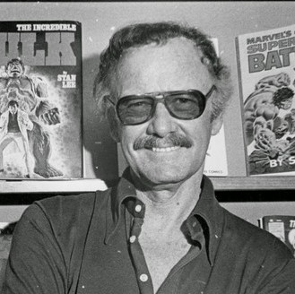

- DEC 28, 1922 - Stanley Martin Leiber was born in Manhattan, New York City, in the apartment of his Romanian-born Jewish immigrants parents, Jack and Celia Leiber.
- SEP 4, 1929 - The stock market crashed and affected thousands of familys. Stan helped his family by getting a part time job at a movie cinima, he was an usher..
- JUL 27, 1938 - Stan attended DeWitt Clinton High School during his teenage years, wanting to become a writer. He enjoyed writing and reading. He lived in a one bedroom apartment, his parents sleeping on a fold-out couch, while the brothers shared the room. He graduated high school at a young age of 16 and a half, joining WPA Federal Theatre Project.
- MAY 18, 1939 - Stanley used the pseudonym "Stan Lee" as a writer, went on to be hired as an office assistant at Timely Comics in 1939 and became an interim editor for the company in the early 1940s.
- JAN 11, 1942 - He is enlisted in World War 2. Surprisingly, he does not fight with a weapon, but with cartoons! Stan draws funny cartoons to cheer up soldiers and give hope to family's. When the war is over, Stan returns home.
- DEC 5, 1947 - After meeting Joan B. Lee, he got married to her.
- APR 17, 1950 - His first daughter named Joan Celia Lee was born.
- JUN 12, 1953 - He did have a second daughter. But sadly three days after birth, Jan Lee passed away.
- JAN 5, 1960 - In the early '60s, Lee was called upon by his boss to create a series for Marvel Comics (Timely's new name) that could compete with rival DC Comics' hit title Justice League of America. Citing writing influences like Sir Arthur Conan Doyle and Jules Verne, and following the encouragement of his wife Joan, Lee did away with some of the usual superhero conventions.
- JAN 6,1961 - Hence, with artist and co-creator Jack Kirby, the Fantastic Four was born in 1961.
- AUG 1, 1962 - “Spider-Man is born!” The Iconic superhero we know and love today was created by for him.
- JUAN 3, 1962 - About a month of drawing later, all of the managers come to Stan and tell him for the results for the month. They tell him that Spider-Man was one of their most best selling comic that month. Stan later joked that when his publisher came running into his office he said "Stan, Stan! Do you remember that guy Spider-Man we both loved so much?".
- MAR 1, 1963 - Iron Man has his first appearance on Tales of Suspense #39
- JAN 1, 1964 - Captain America returns more even more popular than he ever was before, 20 years ago.
- JAN 1, 1966 - The first black superhero, Black Panther, makes an appearance shortly after the return of Captain America.
- APR 1, 1968 - Iron Man has his first solo comic, Iron Man and Sub-Mariner, with Stan Lee as its editor.
- JAN 1, 1974 - Origins of Marvel Comics is published, where Stan narrates the origins and history of its most famous creations.
- SEP 9, 1978 - The Silver Surfer: The Ultimate Cosmic Experience is released.
- MAY 7, 1989 - His first cameo is in "The Trial of the Incredible Hulk".
- DEC 7, 1993 - Marvel Films is founded
- FEB 6, 1994 - Jack Kirby, a good friend and co worker, passes away.
- AUG, 1996 - Marvel Films renamed to Marvel Studios.
- JAN 1, 2000 - Marvel starts to drop. They start to depend on advertisements alone. Characters like Black Spider-Man are created during this time period. Stan is upset, until the movies start rolling around.
- SEP, 2001 - Release of "Just Imagine Stan Lee... " for DC Comics, in which he re-imagined several DC superheroes including Superman, Batman, among others.
- MAY 3, 2002 - Spider man gets his first live action movie in the U.S. and gave Marvel a boost in money to gain popularity and make more comics and movies.
- MAY 2, 2008 - The Marvel Cinematic Universe (MCU) begins, with the release of Iron Man, this and the following films all share continuity with each other
- DEC 31, 2009 - The Walt Disney Company purchased Marvel Entertainment for $4 billion.
- MAY 1, 2015 - Marvel Strikes back as Stan becomes an executive producer for movies of HIS super heroes! Movies that Stan participated in and starred in cameos in include 8 X-Men movies, 5 Spider-Man movies, 3 Iron Man movies, 2 Avengers movies, a Dead-pool movie and more.
- DEC 1, 2016 - Stan revolution:Stan Lee created many heroes, villains and fans throughout his long life. He is truly amazing.
- NOV 12, 2018 - Lee died six weeks before his 96th birthday at Cedars-Sinai Medical Center in Los Angeles, California, after being rushed there in a medical emergency earlier in the day.
Comic books to me are fairy tales for the grown-ups.